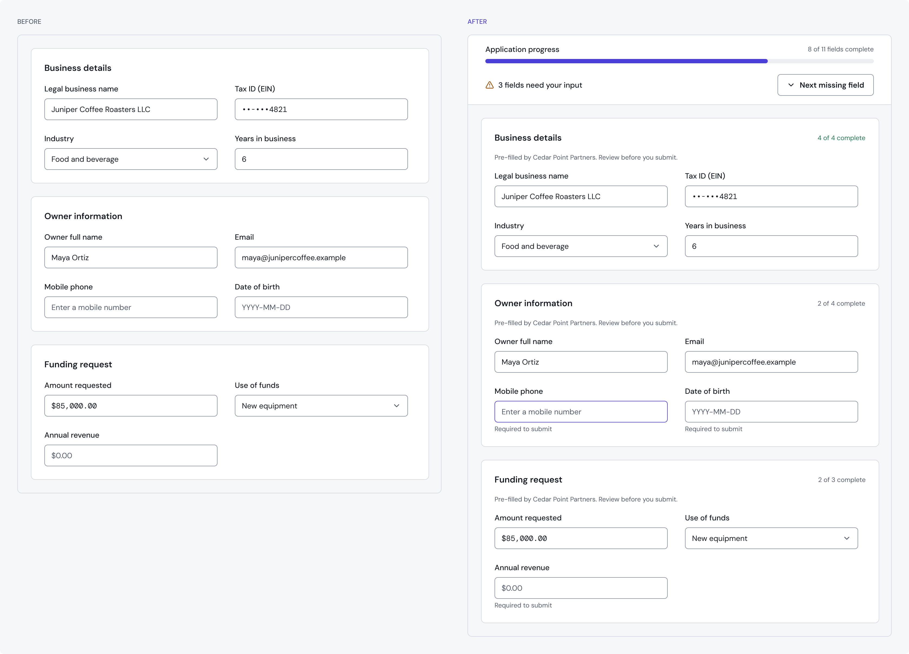
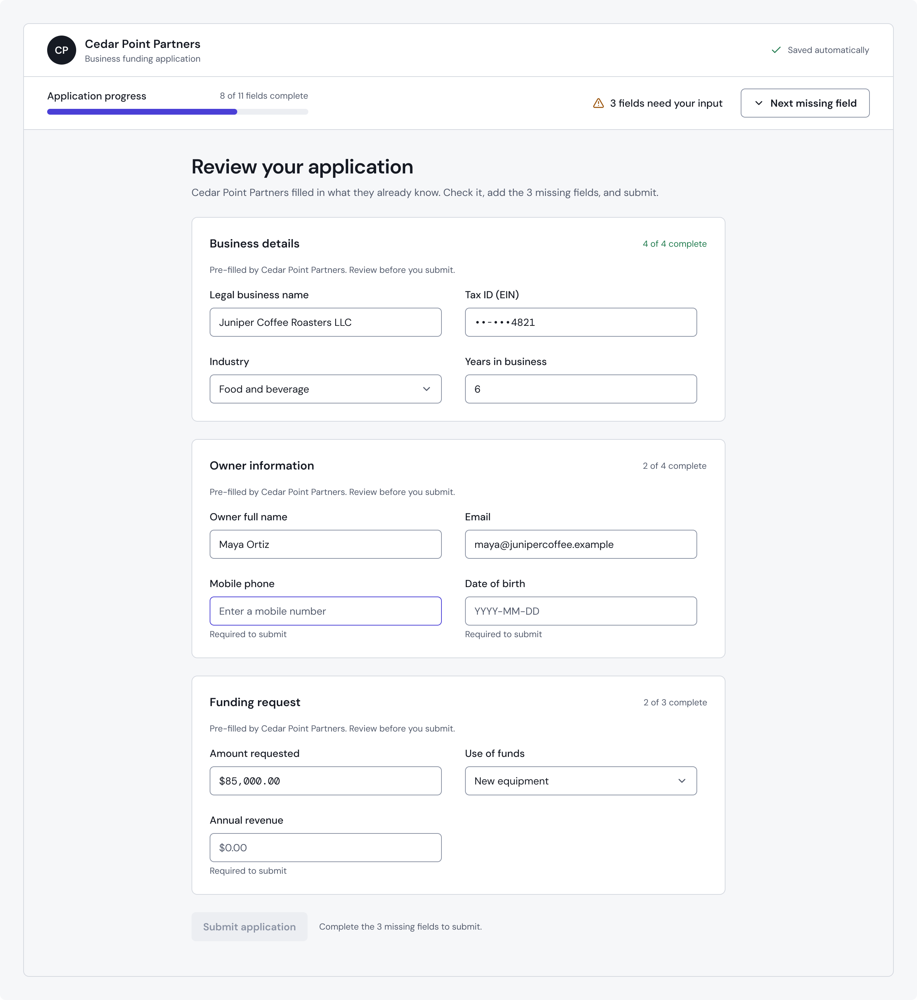

Getting applicants through a form someone else started
Banks and fintechs offered small-business loans through Quantum’s platform. Together with my design teammate, I designed the portal their teams worked in, the internal admin that managed them, and the application flow their customers completed.
- Role
- Product design, co-led with my teammate
- Team
- 2 designers, engineering, Director of Product
- Timeline
- 2023–2025
- Users
- 250+ partners, including US Bank and SoFi, and their applicants
Visuals are reconstructions built with Kestrel UI, a fictional brand with fictional data. They show the principles of the work, not the company’s actual screens.

Context
Quantum is lending infrastructure: partners bring the borrowers, Quantum runs the lending. Partners needed one place to submit applications, follow their accounts, see their commissions and handle documents, and Quantum needed a way to onboard and manage those partners.
My role
I co-designed the experience with my design teammate, from definition sessions and initial flows to information architecture and bi-weekly demos with stakeholders. We split the work evenly and refined it together.
Three kinds of users, one system
Roles let the same portal serve an agent and a manager without separate products, and an internal admin kept partners, users and permissions under control.
Who does what
| Role | Applications | Accounts | Commissions | Documents |
|---|---|---|---|---|
| Partner agentPartner portal | Submit and track | Follow | View only | Manage |
| Partner managerPartner portal | Submit and track | Follow | View and manage | Manage |
| Quantum teamInternal admin | Onboard partners, set up their users and roles, and configure each partner | |||
The problem we found after launch
Applications reached Quantum in two ways: partners filled them in on the applicant’s behalf, or sent the applicant a link to a pre-filled form. Session recordings showed where the second path broke down. Applicants opened a form that was mostly complete but still missing fields only they could answer, and they struggled to find them. Many left before finishing.


Decisions
Take people to what’s missing
Over a couple of iterations we added a toolbar that moves the applicant to the next missing field, so they don’t have to scan a long form for gaps.
Show progress, not just fields
A progress bar makes clear how much is left, which matters most when a form arrives already half done.
Plain language where compliance allows
We removed jargon and reordered fields so the questions made sense in sequence, while keeping the wording compliance required.


Outcome
- More applicants completed their applications and fewer abandoned the form, observed after the changes but not formally measured.
- The Director of Product named the partner portal one of the standout design wins of 2025.
What I’d do differently
Instrument the pre-filled form from day one: completion rate and drop-off by field. We saw the improvement in recordings and in completed applications, but a funnel would have shown exactly which change mattered most.
Start again